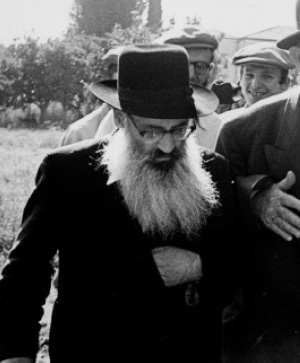

The Mashgiach Early Years
About R’ Shneur Zalman Eliezer Horowitz, son of R’ Itche der Masmid, who was the mashgiach in Yeshivas Tomchei T’mimim in Lud. * Presented to mark the day of his passing on 5 Adar I 5744.

In his childhood he was very close to his lofty father who was one of the great mashpiim of his generation and a role model of a Chassid and Tamim. After his bar mitzva, he went to the yeshiva in Nevel where he became known for his tremendous diligence in learning. His exertion together with his giftedness and excellent memory turned him into an extraordinary baki (person with encyclopedic knowledge). He even corresponded with the Rogatchover Gaon at this point and received some Torah letters in response.
With time, he became known as a walking encyclopedia, since his knowledge was not limited to the usual s’farim but also included not-commonly known s’farim and authors within Torah literature. He also had prodigious knowledge of the biographical details of Torah greats and Jewish communities, history and bibliography, minhagei Yisroel and more.
He loved visiting g’dolei ha’Torah of all groups and acquiring information from them. In the years 5690-5691 he was in Yekaterinoslav. There he became very close with the gaon, Rabbi Levi Yitzchok Schneersohn z”l, the Rebbe’s father, who gave him smicha for rabbanus. He spent hours with him and received from him many Divrei Torah in Nigleh and Chassidus.
Although his two younger brothers left Russia with his father in 1933 (as per the Rebbe Rayatz’s instruction that he try to take them out with him), Eliezer remained behind in Russia with his brother Tzemach. He spent the terrible years of persecution and war behind the Iron Curtain. In 1946 he married the daughter of a wealthy man from Kiev, and the wedding was held there.
As a young man, he was appointed as a maggid shiur and mashgiach in Yeshivos Tomchei T’mimim in Vitebsk and Yekaterinoslav. In the years to come, he spread Torah in the Soviet Union with great mesirus nefesh and suffered greatly because of it.
R’ Eliezer finally arrived in Eretz Yisroel in 5709 with the Chabad clandestine emigration. He was a mashgiach in Yeshivas Achei T’mimim in Tel Aviv and was later involved in transferring the yeshiva to Lud. He worked as a mashgiach there together with R’ Shlomo Chaim Kesselman, who was the mashpia.
Later on, he was appointed as the menahel ruchni of the yeshiva k’tana (what we call mesivta or high school). In this role he established the character of the yeshiva and raised it to a high level. He was particularly devoted to absorbing students from the Eidot HaMizrach (Sephardim) and mainstreaming them into the yeshiva. Among his many roles in spreading Torah, he served for a number of years as a maggid shiur of Chassidus in the yeshiva g’dola in Kfar Chabad. Likewise, he gave shiurim every day in the Chabad neighborhood in Lud, where he lived.
He founded the kollel in Kfar Chabad in 5724 according to an order he received from the Rebbe when he was in yechidus in 5723. When the hanhala of the kollel raised the idea of naming the kollel after the Rebbe, the Rebbe refused.
He passed away on 5 Adar I 5744/1984.
WHY ARE YOU
LEARNING CHASSIDUS?
R’ Mendel Futerfas related:
When I was in Charkov, the local slaughterhouse was shut down by the communists and became a beis midrash. The shochtim’s room (which was where they checked the knives, etc.) became the private room of R’ Itche der Masmid, who sat there all day and davened. Now and then he would come out to the beis midrash.
At that time, I learned Hemshech 5666 with R’ Eliezer his son. Our learning was very successful, in-depth and thorough. We both enjoyed the learning very much. One day, as we were learning, R’ Itche came out of his room wearing tallis and t’fillin and called me to come into his room. The impact of the fervent davening that he had just finished was still apparent on his face. When we entered the room, his eyes burned like two coals and he asked me, “Mendel, why do you learn Chassidus – for haskala or for avoda?”
I was frightened by the question. It was known that a k’peida (annoyance) of R’ Itche could cause harm (especially at this time when his face was still on fire from his davening). If I told him that I learned for haskala, which was unlike what he demanded that everything be solely for avoda, he would censure me for wanting to turn the study of Chassidus into merely something of haskala; who knows what would happen to me? And if I answered that I learned for avoda, he would censure me for thinking of myself as an oved.
I finally said, “For haskala I surely do not learn.” My equivocal response was to his liking. He smiled and dismissed me and then he asked me to call in his son, Lazer. Apparently, he asked him the same question. I stood outside the room and heard the loud sounds of weeping. Both of them cried, father and son.
THE PRAYER OF A FATHER
We can see more about the chinuch he got from his great father from an excerpt from a pidyon nefesh that his father wrote to the Rebbe Rayatz, probably in the summer of 5650. In it, he also makes a request for his son:
“ … to arouse much mercy on my son Shneur Zalman Eliezer ben Fruma that he be truly G-d fearing according to the way of Chassidus and with much chayus and that he not set his eyes upon being involved in the nonsense of the world. Only Toras Hashem should be his desire. May Hashem soon prepare for him a proper match as he wishes. May he be healthy and whole and may Hashem lengthen his days and years with goodness and pleasantness. May he merit to see the consolation of Tziyon and Yerushalayim amen, kein yehi ratzon.”
IN THE CROSSHAIRS OF THE INFORMER
As mentioned, after his father left Russia, R’ Eliezer had no visa and was trapped in the Soviet Union. The fate of Russian Jewry was bitter as they languished under siege and in poverty, persecuted by the Yevsektzia. The gates of the country were locked and freedom was a distant dream. However, the Jewish mind constantly sought a crack by which to exit the borders of that country.
Among these cracks and fissures was the city Batumi in Georgia, which was only eight kilometers away from free Turkey. Attempts were made to illegally cross this border. The crossing was done primarily by professional smugglers, residents of Batumi, who were as familiar with the roads of Turkey and Batumi.
The members of the fleeing group would meet with a smuggler in Kutais, where he was paid handsomely for his troubles. From there they went to the train station in Batumi, a four hour trip.
From Batumi to Turkey they would walk through a forest for a few hours on winding paths and roads which were unknown to outsiders, until they came to the river. There, a small boat waited for them with other smugglers who brought them across the river straight into Turkey. Other smugglers brought the group to the center of town. Upon arriving, free in Turkey, some of them went to Eretz Yisroel and some continued to other countries. Jewish organizations helped them reach their destinations.
According to their agreement, upon arriving in Turkey the group signed a note saying they crossed the border and had arrived in Turkey. This note was shown by the smugglers to candidates of the next operation. When they saw that all had gone well, they prepared to leave.
It happened that the government succeeded in catching one of the smugglers. They were very strict about crimes like this and the sentence was no less than twenty-five years in Siberia.
As usual, the NKVD offered a cruel choice, to be freed and become their agent or to spend the next twenty-five years doing hard labor in Siberia. Any smuggler who picked the first option was released and became one of them.
So the next time Jews tried leaving the country, instead of bringing them to Turkey, he would lead them directly into the arms of the NKVD and each one was arrested. After they were caught, in order for news of their arrest not to become known to other groups, the police officer would force one of the members of the group to sign that they had arrived safely in Turkey. The officer then gave this note to the smuggler so that the next group would not suspect anything and would go with this informer who brought them directly to the police. This is how the smuggler saved his own life in exchange for betraying many Jews who were confident that they would soon be free men.
Among those who fell into this trap were talmidim of the Yeshivas Tomchei T’mimim in Kutais and a number of other Chassidim. Nobody knew they were arrested and the groups of those attempting to escape continued to set out.
This could have gone on for a long time if not for the mesirus nefesh of a Jew by the name of Avrohom Ber Stiglitz and R’ Meilich Kaplan (then talmidim in the yeshiva in Sachkhere, Georgia and later rav in Shikun Chabad in Lud).
The final group that left in Nissan 5693/1933 was comprised of only two people, R’ Avrohom Ber and R’ Meilich. Before leaving, R’ Avrohom Ber went to R’ Avrohom Levik Slavin in Kutais to say goodbye. As they spoke, R’ Avrohom Ber told R’ Slavin that something seemed amiss about the whole thing, that after only a day or two from when they left, they were already in Turkey and all of them, without exception, managed to cross the border without incident.
“My heart tells me,” he said sadly, “that something is amiss. If I had the courage, I would say that not only are they not in Turkey, but they are behind bars and nobody knows!”
R’ Slavin tried to reassure him, but R’ Avrohom, who was unusually brave, said, “I’m going to go anyway. If I am right, I will do all that I can to stop them from harming other Jews. I understand that it is highly probable that this is the last time I will be speaking with a Jew, but we must stop this satanic trap!”
Avrohom Ber and Meilich Kaplan left under a shroud of tension, while R’ Avrohom’s mind did not stop working as he planned his next moves if his fears proved justified. Before they left, R’ Avrohom Ber demanded a guarantee from R’ Meilich that he would not sign anything, no matter what.
Then, as they were on their way, they found themselves surrounded by NKVD agents. They were separated and a Jewish officer asked each of them to sign the affirmation that they had crossed safely. Since they refused to sign, they were pressured and threatened. The two still did not sign; the trap had been uncovered.
For over nine months the members of the groups languished in jail until they stood military trial. At first Anash did not even know where they were, as we see in a letter that the Rebbe Rayatz wrote to R’ Meilich’s father. It was only after a while that they heard where they were, but there did not seem to be a way to help them.
Among these prisoners was R’ Eliezer Horowitz. Somehow, he managed to smuggle out a letter to his father via some diplomat. His father was in New York at the time, on a mission for the Rebbe. In the letter, he related what had happened to them and that they were expecting to be sentenced to twenty-five years in Siberia.
The Russian Foreign Minister was in the US at this time. This was about fifteen years after the end of World War I and the Russian economy was in terrible shape. They desperately needed aid from Washington.
R’ Itche immediately put together a delegation of elder Chassidim who presented a request to the Foreign Minister to meet with him about an urgent matter. Their request was granted.
In their meeting, they told him the purpose of their coming and even told him, in the Rebbe’s name, that if the Russian government did not release the Chassidim rotting in jail he would do all he could to thwart the goal of his visit.
The Foreign Minister, afraid that the Rebbe would publicize why Jews were in Russian prison and why they tried to escape the country, immediately sent a telegram to Stalin and asked him to free the Chassidim in Batumi; otherwise, the success of his mission was in danger. Stalin told the NKVD to release the prisoners in Batumi.
WHY DON’T YOU MAKE USE OF HIM?
R’ Eliezer Horowitz was known as a tremendous baki in Tanach, Tanya, and Toras HaChassidus, especially Torah Ohr and Likkutei Torah which he cherished. He knew entire segments by heart.
When he went to the yeshiva in Lud, he was not given a job at first until the Rebbe wrote to the hanhala: You have a Jew who is baki in Torah Ohr and Likkutei Torah, why aren’t you utilizing him?
Then he was appointed mashgiach in the place of R’ Chaim Shaul Brook who became the mashpia.
In a letter to the Rebbe Rayatz from Erev Shavuos 1949, the hanhala of the yeshiva in Lud wrote, “We just accepted R’ Eliezer Horowitz, son of R’ Itche Masmid, as mashgiach for the study of Nigleh. It seems that, Boruch Hashem, we had the good fortune to hit the mark and he will fill the role well, to the glory of the yeshiva.” Three months later, the Vaad Aguch wrote to the Rebbe, “The character of the yeshiva in ruchnius, in Nigleh and Chassidus was greatly improved since the talmidim came from Paris and since the appointment of R’ Eliezer Horowitz as mashgiach.” R’ Eliezer served in this role for decades and had numerous talmidim.
WHY AREN’T YOU EATING?
The night of Rosh HaShana 5723, R’ Horowitz had the privilege of being one of the Chassidim who was invited to go upstairs and eat the Yom Tov meal with the Rebbe in the Rebbe Rayatz’s apartment. The Rebbe hardly spoke at that meal. One of the few comments he made was when he asked R’ Horowitz, “Why aren’t you eating? On Rosh HaShana, according to all opinions, there is an obligation to eat!”
FUNDRAISING
At the beginning of 5723, the Rebbe told him to fundraise for the vocational school. He did so, and then gave the money to R’ Chadakov.
In Teves 5723, the Yeshivas Tomchei T’mimim in Kfar Chabad was in the middle of construction. Debts mounted and there was no money. R’ Eliezer Horowitz and R’ Shlomo Maidanchek came to the rescue. Together, they announced a campaign targeting smaller donors. The yeshiva would continue to grow and the budget would come from the broader public.
The two of them traveled and inspired Anash at regional gatherings that took place in Kfar Chabad, Tel Aviv, Ramat Gan, and B’nei Brak. It was a daring idea to raise hundreds of thousands of liras from ordinary Jews who worked hard for their money, and to everyone’s surprise, it worked. About a hundred people immediately responded and pledged to give 1000 liras, some in one payment and some in monthly installments. This campaign not only saved the yeshiva from its creditors, but enabled it to expand.
D. Levanon. "The Mashgiach Early Years." Beis Moshiach, no. 917 (February 28, 2014).